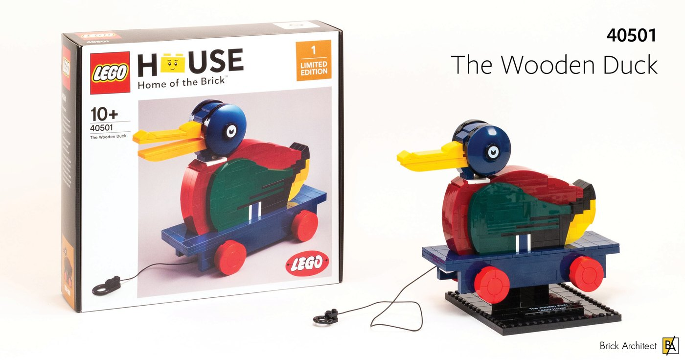
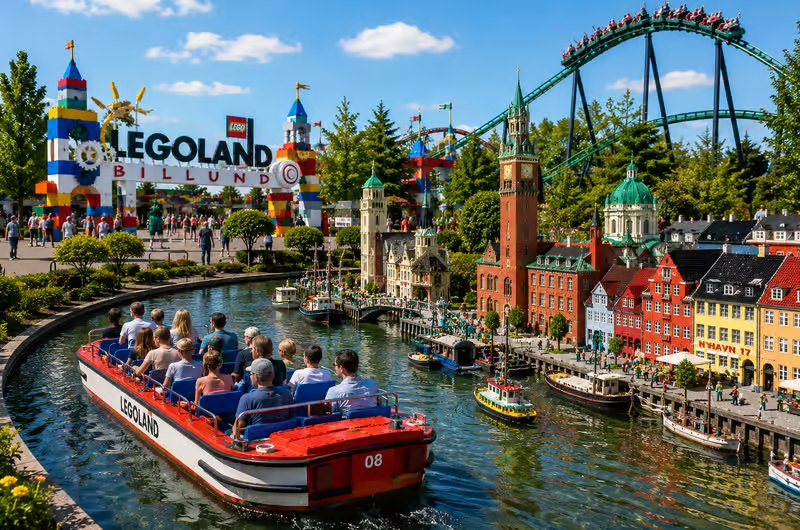
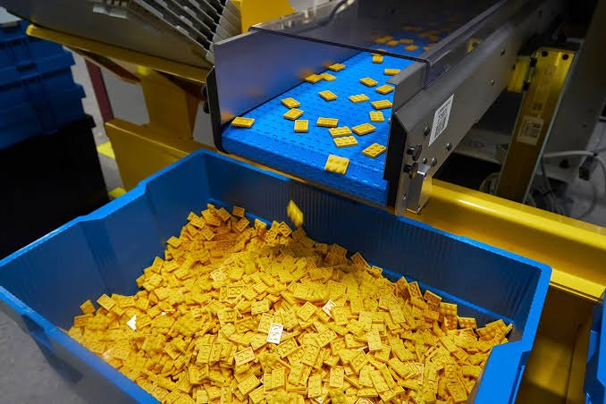

Chapter 1
The initial building blocks
This section traces LEGO's beginnings and growth through key milestones in its history. An interactive timeline and business expansion map reveal how the company developed over time and extended its presence from Denmark to the wider world.


Chapter 2
A World Connected
Explore LEGO's global connections through the places where its bricks are made and the landmarks they recreate. From manufacturing sites to iconic buildings, discover how LEGO brings different parts of the world together.

Chapter 3
More worlds built
Discover how LEGO's range has grown through changing themes and an expanding variety of set designs. Explore how each new release creates more opportunities for builders to imagine, create and explore.
Chapter 4
Culture and generations
The final chapter explores the cultural influence that cemented LEGO into the world, as one of the significant pieces that has transcended through generations and more to come.
Sources
https://rebrickable.com/downloads/
https://brickset.com/article/52664/api-version-3-documentation
https://www.lego.com/en-us/aboutus/lego-group/the-lego-group-history
https://www.lego.com/en-us/history/articles/d-early-expansion
https://www.lego.com/en-us/history/articles/d-earliest-sales-and-manufacture-outside-denmark
https://mavenanalytics.io/data-playground/lego-sets
https://www.kaggle.com/datasets/rtatman/lego-database
https://www.kaggle.com/datasets/iamjcmc/lego-database-2025
https://data.imdb.com/non-commercial-datasets/
https://www.lego.com/en-hu/history/articles/e-the-first-legoland-park
https://www.lego.com/en-us/aboutus/news/2020/may/lego-haunted-house-2020
More sources can be obtained from the CSV file in the datasets downloaded